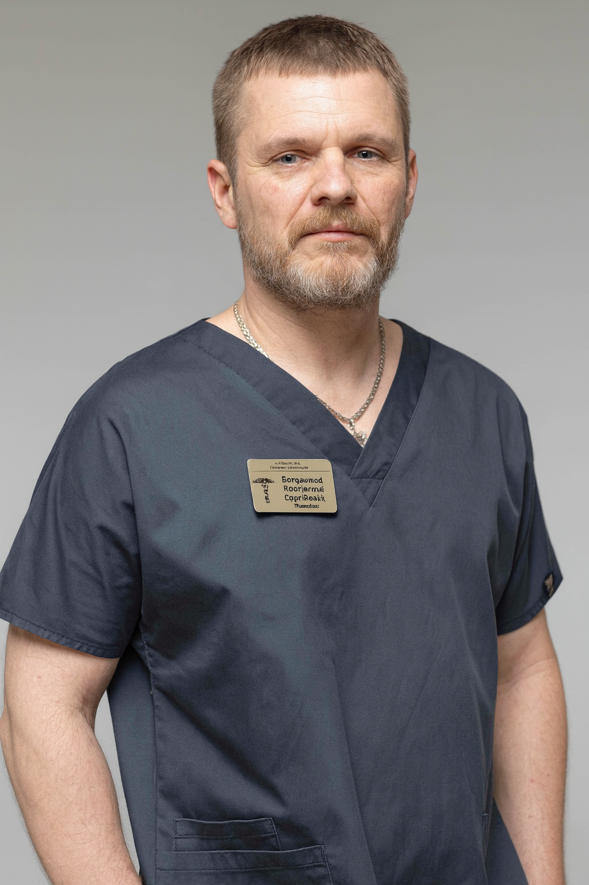

+38(068)
79 72 782
+38(068)
79 72 782Похмелье, алкогольное отравление и запой: в чём разница
Когда нужна помощь нарколога в Харькове

Бесплатная консультация, работаем круглосуточно 24/7
Когда нужна помощь нарколога в Харькове
Дата написания: 1 окт. 2026 г.
Последнее обновление: 1 окт. 2026 г.
После употребления алкоголя состояние человека может значительно отличаться в зависимости от количества выпитого, продолжительности употребления, наличия хронических заболеваний и сформированной зависимости. В одном случае речь идёт об обычном похмелье после разового употребления алкоголя, в другом — об алкогольной интоксикации, а при многодневном употреблении может развиваться запой с выраженным абстинентным синдромом. Эти состояния отличаются по механизму развития, тяжести симптомов и необходимой медицинской тактике. Важно понимать, когда достаточно отдыха, восстановления жидкости и сна, а когда требуется наркологическая помощь в Харькове. Повторная рвота, выраженный тремор, значительные скачки давления, тахикардия, сильная тревога, бессонница, спутанность сознания, галлюцинации, судороги или нарушение дыхания могут указывать на состояние, которое нельзя считать обычным похмельем.
Похмелье — это комплекс неприятных симптомов, которые чаще всего появляются через несколько часов после прекращения употребления алкоголя или утром следующего дня. На выраженность состояния влияют количество и крепость спиртного, скорость его употребления, наличие пищи, качество сна, возраст человека, состояние печени, сердечно-сосудистой системы и индивидуальная чувствительность к этанолу. Алкоголь способствует изменению водно-электролитного баланса, ухудшает качество сна, влияет на сосудистый тонус и работу нервной системы. Поэтому после употребления человек может ощущать головную боль, слабость, сухость во рту, сердцебиение и общее недомогание. При лёгком похмелье состояние постепенно улучшается самостоятельно, а лечение похмелья на дому чаще всего сводится к отдыху, восстановлению жидкости и полноценному питанию.
Обычное похмелье может проявляться головной болью, жаждой, сухостью во рту, общей слабостью, разбитостью, тошнотой, снижением аппетита, раздражительностью и повышенной чувствительностью к свету или шуму. Некоторые люди отмечают учащённое сердцебиение, тревожность и невозможность нормально выспаться. При этом человек обычно сохраняет ясное сознание, способен пить жидкость, нормально общаться и ориентироваться в происходящем. Если симптомы постепенно уменьшаются в течение дня, чаще всего серьёзная медицинская помощь не требуется. Однако если состояние ухудшается, появляется повторная рвота или выраженная тахикардия, может потребоваться консультация нарколога в Харькове.
Алкогольное отравление представляет собой более выраженное токсическое воздействие этанола на организм. В отличие от похмелья, которое обычно проявляется после завершения употребления, интоксикация может развиваться непосредственно во время приёма алкоголя или вскоре после него и сопровождаться значительным нарушением работы центральной нервной системы. Человек может становиться резко заторможенным, плохо реагировать на окружающих, терять координацию, испытывать многократную рвоту или выраженную слабость. При тяжёлом состоянии страдают сознание и дыхание. В такой ситуации обычная капельница от алкоголя на дому не всегда является достаточной мерой, поскольку сначала необходимо оценить тяжесть интоксикации и исключить опасные осложнения.
Алкогольная интоксикация может сопровождаться выраженной слабостью, головокружением, тошнотой, неоднократной рвотой, нарушением координации, заторможенностью и сильной сонливостью. По мере увеличения тяжести состояния могут появляться спутанность сознания, изменения артериального давления, тахикардия, нарушение речи и снижение реакции на обращение. Особенно настораживают ситуации, когда человека трудно разбудить, он не может поддерживать нормальный контакт или его дыхание становится редким и поверхностным. В подобных случаях требуется не просто детоксикация от алкоголя, а полноценная медицинская оценка и при необходимости экстренная помощь.
Опасным алкогольное отравление становится тогда, когда токсическое действие этанола начинает угрожать жизненно важным функциям организма. Наиболее серьёзными признаками являются потеря сознания, невозможность нормально разбудить человека, редкое или нерегулярное дыхание, судороги, выраженная спутанность сознания и быстрое ухудшение общего состояния. Дополнительный риск возникает, если алкоголь употреблялся вместе со снотворными, транквилизаторами, опиоидами или другими веществами, которые угнетают центральную нервную систему. В такой ситуации необходимо срочно вызвать экстренную медицинскую помощь. Лечение алкогольного отравления дома не должно задерживать госпитализацию, если присутствуют признаки угрозы жизни.
Запой — это продолжительное употребление алкоголя в течение нескольких дней или более, когда человек регулярно принимает новые дозы спиртного и фактически не успевает полностью выйти из состояния интоксикации. По мере продолжения запоя нарушается сон, усиливается обезвоживание, ухудшается питание, повышается нагрузка на сердце, печень и нервную систему. Нередко человек начинает употреблять алкоголь уже не ради опьянения, а для временного уменьшения тремора, тревоги, сердцебиения или других симптомов, возникающих после снижения концентрации алкоголя в организме. В таких случаях может потребоваться вывод из запоя на дому в Харькове или стационарная помощь, если домашнее лечение небезопасно.
При разовом употреблении алкоголь перестаёт поступать в организм после одного эпизода, а затем постепенно выводится. После этого могут сохраняться симптомы похмелья, но у человека без зависимости они обычно постепенно уменьшаются. При запое алкоголь употребляется повторно в течение нескольких дней, а снижение его концентрации может сопровождаться выраженным ухудшением состояния. Человек снова принимает спиртное, чтобы уменьшить неприятные ощущения, и тем самым поддерживает запой. Поэтому снятие запоя на дому требует оценки не только степени интоксикации, но и риска абстинентного синдрома после прекращения употребления.
Похмелье развивается после эпизодического употребления алкоголя и связано прежде всего с интоксикацией, обезвоживанием, нарушением сна и другими последствиями приёма спиртного. Оно может быть неприятным, но обычно проходит самостоятельно. Алкогольный абстинентный синдром возникает у человека с физической зависимостью, когда концентрация алкоголя в крови снижается или употребление полностью прекращается. Появляются тремор, сильная тревога, потливость, бессонница, тахикардия, раздражительность и выраженное внутреннее напряжение. В таких случаях может потребоваться лечение алкогольной абстиненции под наблюдением врача.
Одним из важных отличий является отношение человека к новой дозе алкоголя. При обычном похмелье большинство людей не хотят снова пить спиртное и предпочитают воду, сон и отдых. При сформированной зависимости употребление небольшой дозы алкоголя может временно уменьшать тремор, тревогу, сердцебиение и другие симптомы отмены. Если человек регулярно употребляет алкоголь утром, чтобы улучшить самочувствие, испытывает сильную тягу и не может самостоятельно завершить многодневное употребление, это может указывать на абстинентный синдром. В такой ситуации желательно обратиться за помощью при алкогольной зависимости.
Осмотр специалиста рекомендуется, если после алкоголя сохраняются выраженная слабость, повторная рвота, высокий уровень тревоги, заметный тремор, значительные колебания артериального давления или выраженная тахикардия. Также настораживает бессонница в течение нескольких ночей после прекращения запоя и невозможность нормально принимать пищу или жидкость. Особенно важно обратиться за помощью, если состояние после алкоголя не улучшается или постепенно становится тяжелее. Срочный вызов нарколога позволяет оценить состояние пациента, определить степень риска и решить, возможно ли лечение на дому.
Нарколог на дом в Харькове может потребоваться при выраженном похмелье, алкогольной интоксикации, абстинентном синдроме или необходимости прекратить запой под медицинским контролем. Домашний осмотр удобен в ситуациях, когда пациент находится в стабильном состоянии, но самостоятельно справиться с симптомами не получается. Врач оценивает давление, пульс, дыхание, уровень сознания, наличие тремора, обезвоживания и других осложнений. После осмотра определяется, достаточно ли симптоматической терапии на дому или требуется наркологический стационар.
При лёгком похмелье человек обычно может самостоятельно пить воду, принимать пищу, нормально ориентируется и не имеет выраженных нарушений дыхания или сознания. В таких случаях состояние чаще всего постепенно улучшается на фоне отдыха, полноценного сна и восстановления жидкости. Не рекомендуется использовать алкоголь в качестве средства от похмелья. Повторное употребление спиртного может продлить интоксикацию и у людей с зависимостью поддерживать новый цикл употребления. Если же самочувствие ухудшается, лучше обратиться за медицинской помощью после алкоголя.
Инфузионная терапия может рассматриваться при выраженном обезвоживании, многократной рвоте, слабости и невозможности нормально восполнять жидкость через рот. Решение принимает врач после оценки состояния пациента. Капельница после алкоголя может использоваться для коррекции водно-электролитного баланса и отдельных симптомов, но не существует единого состава, подходящего всем. Объём и препараты подбираются индивидуально с учётом давления, состояния сердца, печени, почек и других факторов.
При выраженном похмельном синдроме врач может назначить инфузионную терапию, если присутствуют обезвоживание, значительная слабость или сохраняющаяся рвота. Перед процедурой важно убедиться, что состояние пациента позволяет проводить лечение дома. Капельница от похмелья на дому должна проводиться по медицинским показаниям. Если человек находится в сознании и его жизненно важные показатели стабильны, домашняя помощь может быть достаточной. При тяжёлых симптомах требуется другой уровень медицинского наблюдения.
При алкогольной интоксикации инфузионная терапия может помочь скорректировать обезвоживание и электролитные нарушения. Она также может быть частью симптоматической помощи после осмотра врача. Однако капельница при алкогольной интоксикации не является способом лечения тяжёлого отравления, сопровождающегося нарушением сознания или дыхания. При таких симптомах сначала необходимо обеспечить безопасность жизненно важных функций и решить вопрос о госпитализации.
Вывод из запоя на дому в Харькове может проводиться только при относительно стабильном состоянии пациента. Человек должен находиться в сознании, самостоятельно дышать и не иметь признаков тяжёлого делирия, судорог или других опасных осложнений. Перед началом помощи врач уточняет длительность запоя, примерное количество употребляемого алкоголя, время последнего употребления, наличие хронических заболеваний и предыдущих эпизодов тяжёлой абстиненции. На основании этой информации определяется безопасная тактика лечения.
Домашнее лечение становится небезопасным при выраженной спутанности сознания, галлюцинациях, судорожных приступах, тяжёлом обезвоживании или значительной нестабильности давления и пульса. Также помощь на дому ограничена при подозрении на алкогольный делирий. При длительном запое и серьёзных сопутствующих заболеваниях может быть рекомендован вывод из запоя в стационаре, где возможно круглосуточное наблюдение за состоянием и своевременная коррекция лечения.
После употребления или отмены алкоголя повышение давления и учащение пульса могут быть связаны с обезвоживанием, тревогой, нарушением работы вегетативной нервной системы или абстинентным синдромом. У человека могут появляться головная боль, сердцебиение, внутреннее напряжение и слабость. Если давление остаётся значительно повышенным, пульс продолжает учащаться или появляются боль в груди, одышка, головокружение либо выраженная слабость, необходим медицинский осмотр. Круглосуточная помощь нарколога позволяет оценить, связаны ли эти симптомы только с алкоголем или требуется дополнительное обследование.
Тремор рук, тревожность и выраженная бессонница часто сопровождают алкогольную абстиненцию. После длительного запоя эти симптомы могут усиливаться в первые часы и сутки после прекращения употребления. Если человек полностью не спит, становится всё более тревожным, возбуждённым или дезориентированным, риск осложнений возрастает. В таких ситуациях лечение абстинентного синдрома после запоя должно проводиться под медицинским наблюдением.
Небольшая тошнота может встречаться при обычном похмелье и постепенно проходить самостоятельно. Однако повторная или неукротимая рвота приводит к потере жидкости и электролитов, что может дополнительно ухудшать состояние. Особенно опасна рвота у сонливого или заторможенного пациента, который плохо реагирует на окружающих. В таких случаях повышается риск попадания содержимого желудка в дыхательные пути. Наркологическая помощь на дому допустима только после оценки тяжести состояния.
После употребления алкоголя человек может ощущать сильную жажду, сухость слизистых, головокружение, слабость и сердцебиение. При выраженном обезвоживании уменьшается количество мочи, усиливается слабость и могут появляться изменения давления. При лёгких симптомах достаточно постепенного восполнения жидкости через рот. Если человек не может пить из-за постоянной рвоты или состояние остаётся тяжёлым, может потребоваться капельница для детоксикации и наблюдение врача.
Появление галлюцинаций после длительного употребления алкоголя — серьёзный симптом, который нельзя считать обычным похмельем. Человек может видеть или слышать то, чего нет, становиться тревожным, возбуждённым, плохо ориентироваться во времени и месте. Спутанность сознания и галлюцинации могут быть проявлением тяжёлой алкогольной абстиненции или начинающегося делирия. В таком случае требуется лечение алкогольного делирия в стационаре, а попытки ограничиться домашней капельницей могут быть опасны.
Алкогольный делирий относится к тяжёлым осложнениям синдрома отмены. Он может сопровождаться выраженной дезориентацией, галлюцинациями, сильным возбуждением, бессонницей, тремором и нестабильностью работы сердечно-сосудистой системы. Пациенту требуется постоянное наблюдение и возможность быстро оказать помощь при ухудшении состояния. Поэтому при подозрении на делирий необходима госпитализация при алкогольной абстиненции, а домашнее лечение использовать нельзя.
Судорожный приступ после запоя или резкого прекращения употребления алкоголя является опасным симптомом. Даже если приступ быстро закончился, человеку требуется медицинская оценка, поскольку судороги могут повторяться. Во время приступа нельзя пытаться разжимать челюсти или помещать предметы в рот. Необходимо убрать находящиеся рядом опасные предметы и вызвать экстренную помощь. В такой ситуации лечение тяжёлой алкогольной абстиненции должно проводиться в стационаре.
Потеря сознания после алкоголя требует срочного вызова скорой помощи. Бессознательному человеку нельзя давать воду, пищу, таблетки или пытаться вызвать рвоту. До приезда врачей важно следить за дыханием и выполнять указания диспетчера экстренной службы. Если дыхание нарушено или отсутствует, необходимо действовать в соответствии с инструкциями диспетчера. Экстренная помощь при алкогольном отравлении в таких случаях имеет приоритет перед любыми домашними процедурами.
Стационарное лечение требуется при тяжёлой алкогольной интоксикации, нарушении сознания, судорогах, галлюцинациях, подозрении на делирий и выраженных нарушениях дыхания. Также госпитализация может быть необходима после продолжительного запоя при нестабильном давлении, значительной тахикардии и тяжёлой абстиненции. Лечение алкоголизма в стационаре в Харькове позволяет проводить круглосуточное наблюдение, контролировать жизненно важные показатели и корректировать терапию при изменении состояния пациента.
Продолжительность восстановления зависит от тяжести состояния. После лёгкого похмелья заметное улучшение часто наступает в течение суток, хотя слабость и нарушения сна могут сохраняться дольше. После выраженной интоксикации восстановление может занимать больше времени, а после продолжительного запоя состояние иногда остаётся нестабильным несколько суток. Поэтому восстановление организма после запоя должно оцениваться не только по субъективному самочувствию, но и по состоянию сердечно-сосудистой и нервной системы.
Инфузионная терапия может уменьшать отдельные симптомы, корректировать обезвоживание и помогать стабилизировать состояние после алкоголя. Однако она не устраняет психологическую тягу, потерю контроля над употреблением и причины повторных запоев. Если человек регулярно возвращается к алкоголю, необходимо рассматривать лечение алкогольной зависимости, а не только периодические капельницы. В противном случае эпизоды интоксикации и абстиненции могут повторяться.
Стоимость вывода из запоя в Харькове начинается от 2199 грн.
| Популярные услуги | Цена |
|---|---|
| Нарколог Харьков | От 1500 грн |
| Капельница от алкоголя | От 2199 грн |
| Вывод из запоя на дому | От 2199 грн |
| Кодирование от алкоголизма | От 6000 грн |
Повторяющиеся запои, необходимость употреблять алкоголь утром, невозможность самостоятельно остановиться, сильная тяга и регулярно возникающая абстиненция могут свидетельствовать о формировании зависимости. После стабилизации состояния желательно обсудить дальнейшее лечение алкоголизма в Харькове. Оно может включать медицинское наблюдение, психотерапию, работу с тягой, профилактику срывов и другие методы, которые подбираются индивидуально.
Круглосуточная наркологическая помощь в Харькове может потребоваться при тяжёлом похмелье, алкогольной интоксикации, многодневном запое и выраженном абстинентном синдроме. При стабильном состоянии возможен выезд врача на дом, первичная оценка и проведение терапии по медицинским показаниям. Если появляются потеря сознания, судороги, галлюцинации, тяжёлая спутанность сознания или нарушение дыхания, домашняя помощь становится недостаточной. В таких ситуациях необходимо обращаться за экстренной медицинской помощью и решать вопрос о госпитализации. После стабилизации состояния важно не ограничиваться устранением острых симптомов, а при повторяющихся запоях рассмотреть полноценное лечение алкогольной зависимости.
Телефон для консультации и вызова нарколога на дом в Харькове: +38(050-021-69-57)

Статья проверена экспертом
Богоденко Констянтин
Врач анастезиолог, ординатор
Возможно интересная статья:
Можно ли принимать таблетки от давления после алкоголя
Да, мы строго соблюдаем полную конфиденциальность на всех этапах лечения. Информация о пациенте, диагнозе и прохождении терапии не передаётся третьим лицам. Обращение к нам не влечёт постановку на учёт. Вы можете быть уверены в безопасности и анонимности.
Программа лечения разрабатывается индивидуально после консультации со специалистом. Учитываются вид зависимости, её длительность, физическое и психологическое состояние пациента. Такой подход позволяет повысить эффективность терапии и снизить риск срыва. Мы не используем шаблонные решения.
Да, мы сопровождаем пациентов и после основного курса лечения. Проводятся консультации, рекомендации по адаптации и профилактике рецидивов. При необходимости возможна дальнейшая психологическая поддержка. Это помогает сохранить результат и вернуться к полноценной жизни.
Номер телефона:
+380 (68) 797 27 82
+380 (50) 021 69 57
Адрес наркологического центра вашего города уточняйте по
телефону
Работаем в: Киеве, Одессе, Львове, Харькове, Днепре,
Запорожье, Черкассах, Чугуеве, Черноморске, Каменском
Telegram: t.me/umbrellaplus
График работы: Круглосуточно